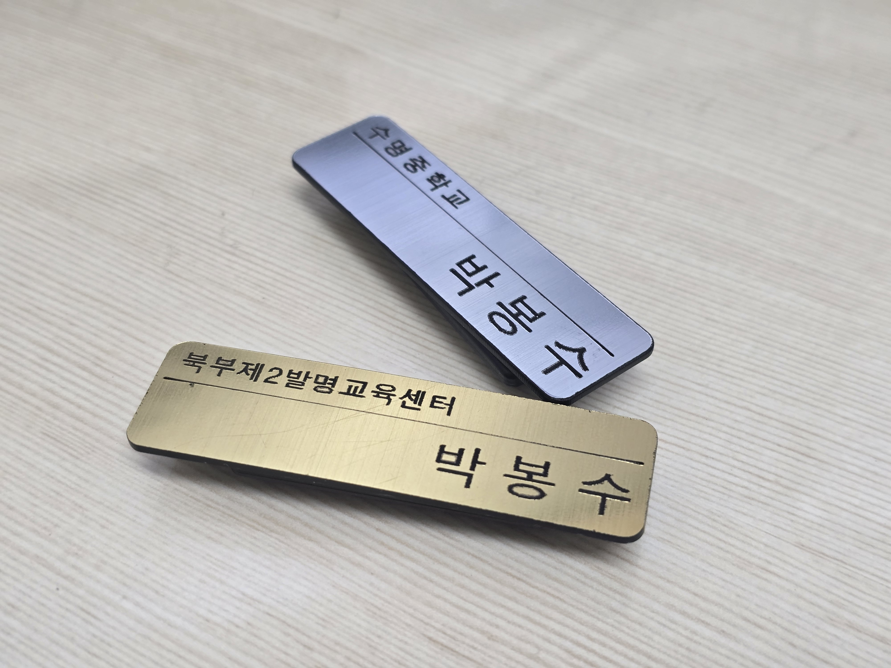
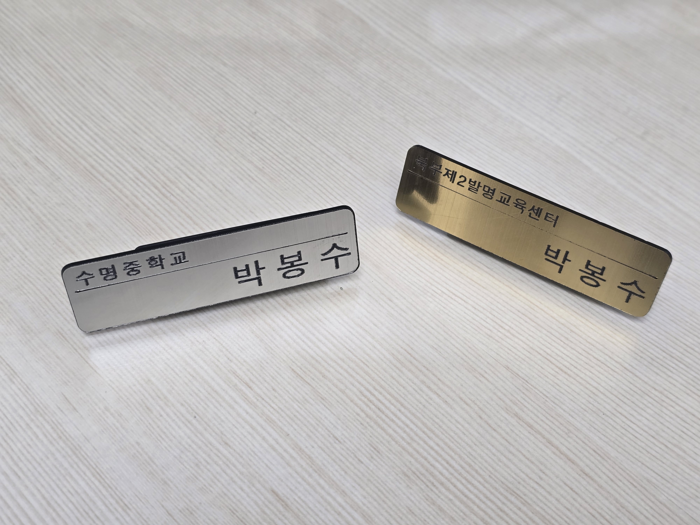
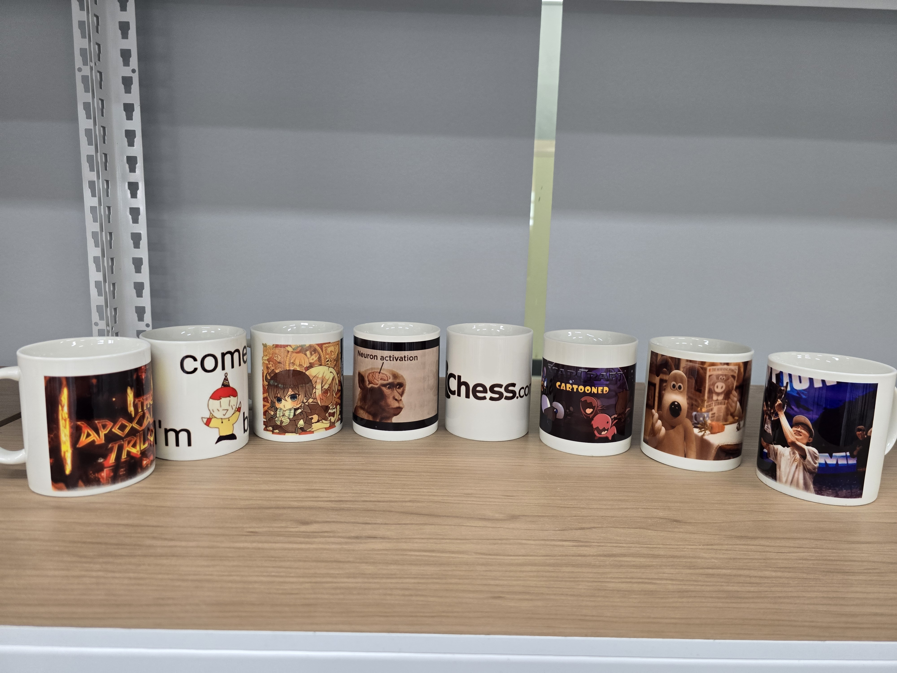
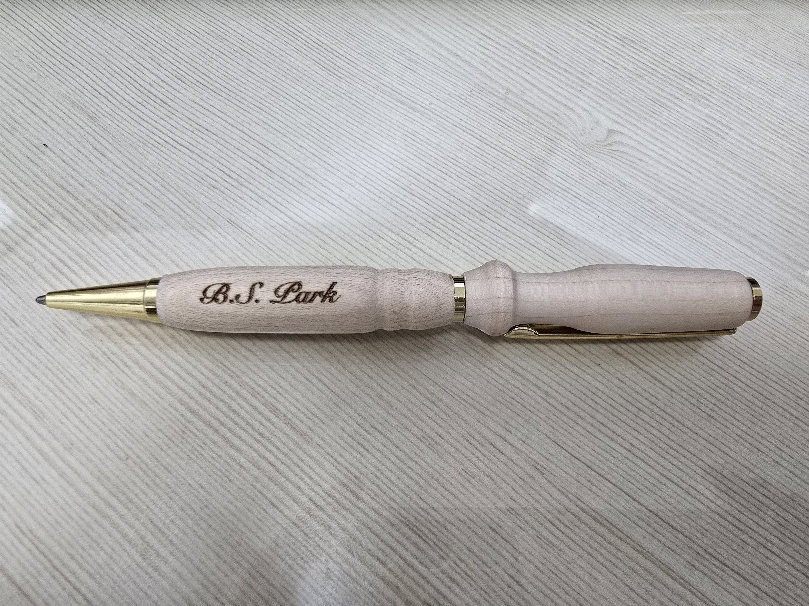
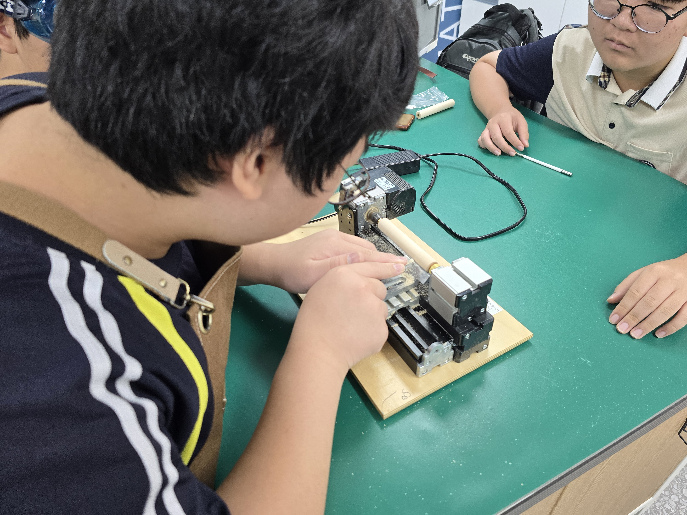

프로그램 안내
1차. 아크릴 명찰
12/12(금)
레이저 커팅기의 정밀한 가공을 체험하고, 로마크 아크릴에 내 이름을 각인하여 고급 명찰을 제작합니다.
정원 10명


사진을 클릭하면 크게 보입니다
2차. 포토 머그컵
12/15(월)
승화전사 기술을 활용하여 추억이 담긴 사진이나 직접 그린 그림을 머그컵에 선명하게 인쇄합니다.
정원 10명


사진을 클릭하면 크게 보입니다
3차. 수제 우드펜
12/17(수)
목공 선반(유니맷)을 이용해 나무를 직접 깎고 다듬어, 세상에 하나뿐인 고급 우드 볼펜을 만듭니다.
정원 6명


사진을 클릭하면 크게 보입니다